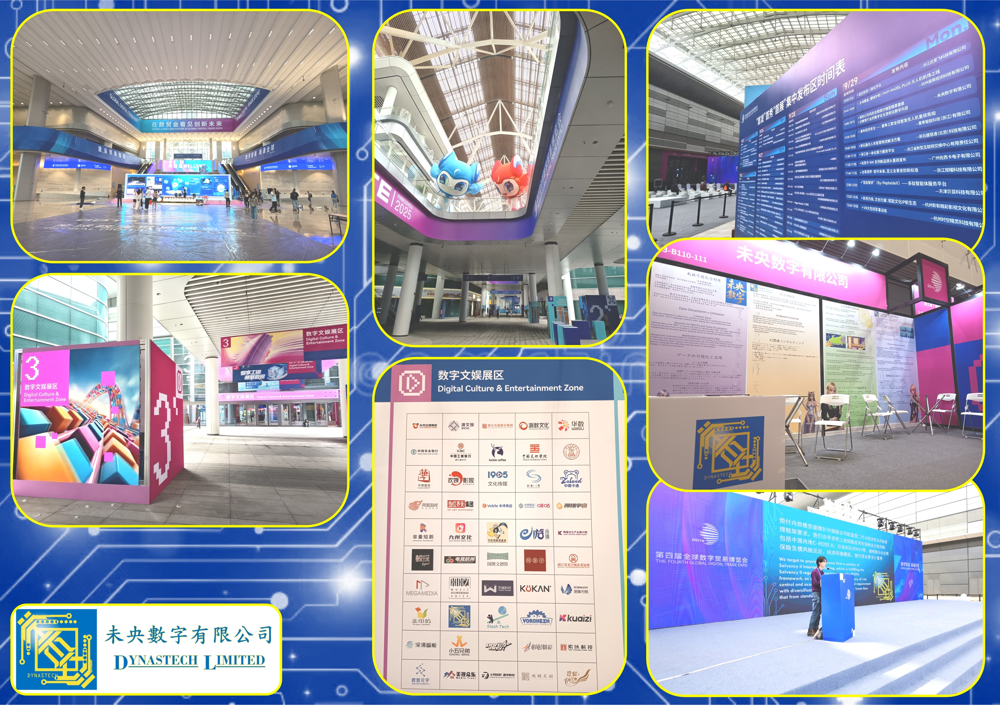
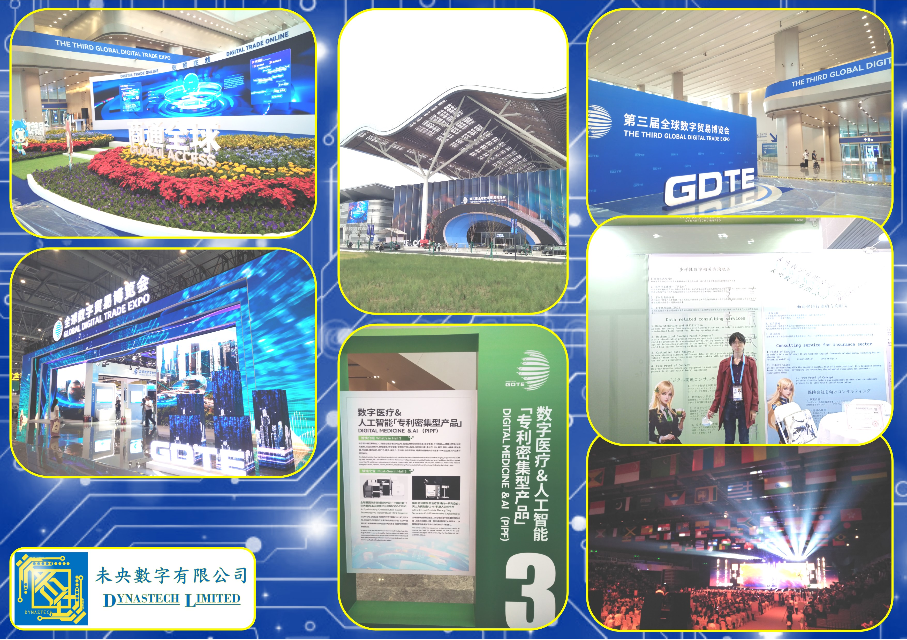

我们的服务
让您的数据发挥其价值
数据处理：
数据利用与分析咨询服务
为包括制造与贸易业的中小企提供免费数据相关的前期咨询服务，务求让有价值的企业数据变成可以使用的数据要素。
其他咨询范畴包括：数据架构处理，价值挖掘，流程设计，参数化，分析报告，可视化。
了解更多金融科技：
保险业精算偿付模型建模
针对保险公司欧盟偿二代与经济资本风险管理框架要求，我们可以协助处理精算建模与流程优化。我们亦寻求机会把上述经验应用在保险业合规范畴，包括中国内地，香港，日本等市场。
了解更多可视开发：
可视化机制与场景平台服务
让数据看得见，是体现数据价值的重要一环。透过前端系统收集结构化数据，或有效的数据清洗，原始数据可以按客户需求转化成容易理解的指标，帮助客户作分析与决策。
了解更多关于我们
多维度的金融科技与数字技术咨询公司
公司介绍
未央數字有限公司在2020年成立于香港，主要为保险公司提供精算模型与偿付能力建模服务。除保险业外，未央数字也积极参与其他行业的数据与数字相关业务，比如游戏业的数据处理，进出口业的贸易市场分析，律所的出海市场风险分析量化等。作为咨询公司，未央数字依托自己研发的量化模型，数据处理与分析工具，可视化产品，希望帮助客户从无序的数字中整理出有用的信息，通过数据了解自身，了解市场，知己知彼。
在新的一年，我们将开始针对保险公司的偿付能力建模工作，细节会尽量考虑中国国家金融监督管理总局的保险公司偿付能力监管规则二，欧洲保险和职业养老金管理局的偿付能力二代，与日本金融厅的经济价值偿付规制。稍后将在此频道陆续发放内容介绍，敬请期待。我们亦欢迎有兴趣的同行一起交流合作。
活动更新

2025年9月，未央數字在第四届全球数字贸易博览会参展——中国。杭州

2024年9月，未央數字在第三届全球数字贸易博览会参展——中国。杭州
业务通讯

2026未央數字业务通讯
成功案例
曾服务于一家英国寿险公司，帮助其建立自动化的内部模型，更准确把控公司的风险组合与储备金要求。
公司介绍视频
联系我们
让我们开始您的数字之旅
联系方式
地区：中国.香港
邮箱：dynastech1@biznetvigator.com